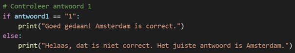

Maak je eigen Quiz in Python:
Een Stap-voor-Stap Tutorial
Inleiding
In deze tutorial ga je een eenvoudige quiz maken met Python. Of je nu een beginner bent of al wat ervaring hebt met programmeren, deze tutorial biedt een goede basis om meer te leren over interactieve programma's in Python.
We gaan stap voor stap door het proces, zodat je precies weet wat je doet en waarom. Aan het einde van deze tutorial heb je je eigen quiz gemaakt!
Wat heb je nodig?
Voordat we beginnen, zorg ervoor dat je de volgende dingen hebt:
- Python: De programmeertaal die we gaan gebruiken. Je kunt Python downloaden van de officiële Python website.
- Een teksteditor: Een eenvoudige editor zoals Notepad (Windows) of een IDE zoals Visual Studio Code.
Zodra je Python hebt geïnstalleerd, kun je beginnen! Laten we nu starten met de eerste stap.
Stap 1: Maak je eerste Python-script
Open je teksteditor of IDE en maak een nieuw bestand met de naam quiz.py.
Schrijf de volgende code om een welkomstbericht weer te geven:
Uitleg van de code:
print(): Dit is een functie in Python die tekst op het scherm weergeeft.- De tekst tussen aanhalingstekens (" ") is wat je op het scherm ziet.
Stap 2: Voeg een vraag toe
We gaan nu een vraag toevoegen aan de quiz. Gebruik een combinatie van print() en input() om een vraag te stellen en het antwoord van de gebruiker op te slaan:
Uitleg van de code:
\nvoegt een lege regel toe om de output overzichtelijker te maken.input()laat de gebruiker iets typen. Het antwoord wordt opgeslagen in een variabele.
Stap 3: Controleer het antwoord
We gaan nu controleren of de speler het juiste antwoord heeft gegeven:

Uitleg van de code:
if: Dit is een voorwaarde. Als het antwoord correct is, voeren we een blok code uit.else: Als het antwoord niet correct is, voeren we een ander blok code uit.==: Dit wordt gebruikt om te controleren of twee dingen gelijk zijn.
Stap 4: Voeg meerdere vragen toe
Je kunt nu meer vragen toevoegen door dezelfde stappen te herhalen:
Uitleg:
Herhaal de stappen voor meerdere vragen, en geef de speler de mogelijkheid om meerdere antwoorden te geven.
Stap 5: Voeg een score toe
Laten we nu een score bijhouden en de speler vertellen hoeveel vragen ze goed hebben beantwoord:
Uitleg van de code:
score = 0: Dit maakt een variabele genaamd score met een startwaarde van 0.score += 1: Dit verhoogt de score met 1 als het antwoord correct is.f"...": Dit is een f-string die variabelen in tekst kan opnemen.
Stap 6: Test je quiz
Voer je quiz uit en speel hem zelf door. Controleer of alles werkt zoals bedoeld. Laat ook anderen je quiz testen en geef ze feedback.
Conclusie
Gefeliciteerd! Je hebt nu je eigen quiz gemaakt in Python. Dit is een geweldige manier om te leren programmeren. Experimenteer verder en voeg je eigen ideeën toe, zoals meer vragen, verschillende soorten antwoorden en zelfs timers!
Veel plezier met het ontwikkelen van je Python-programma's!